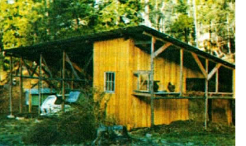

In 1963; my wife (Carol) and I bought 20 acres of wooded land in northern California's Trinity County, near Weaverville. It took us a full ten years to muster the courage to cut our city ties and move to that mountain property . . . but we finally did it. (The decision was easy to make when Carol-who was more than ready for the switch-finally said to me: "Either we move onto that land or we sell it!" Naturally, we moved.)
Our private Eden is a remote tract of :crest located at the end of two miles of dirt road that climbs to an elevation of 3,300 feet. Those "in the know" shook their heads when we announced our intention of establishing a year-round home back in the woods. "Too much snow, poor road, no power, and no water," we were told.
As it turned out, our biggest obstacleinitially-was not the snow, the road, or the lack of utilities, but the building codes. The Powers That Be had laid down so many strictures governing log home construction that I finally decided to sell the raw timber I'd planned to build with and use the money to buy framing lumber for an 800squarefoot chalet.
My father-in-law-a handy fellow who lives in not-too-distant Mendocinohelped me put the lodge up in two weeks' time. (I'm still finishing the inside of it after three years.) As you might expect, 800 square feet of living space isn't a whole lot for four people (my wife and me and the two boys), but when the boys leave home, at least Carol and I won't be the "little old couple in the big house"!
Since moving up to the mountain, we've learned that we can do without most of the things we once thought were necessities. Running water is a good example. For our first two and a half years here, we packed water in from a nearby creek. Now we have a gravity flow water system, the central element of which is a 1,100-gallon concrete septic tank buried on a hillside about 90 feet above the house. (The tank is kept full by a small gasoline-engine pump that-with the aid of about a quart of petrol every two weeks-sends all the water we need up to the tank from a nearby spring.)
We might still be using water from the small creek that passes through our meadow except that the stream crosses three other pieces of (now-occupied but formerly vacant) property above us. Rather than drink the possibly tainted water, we built a small earth-and-rock dam across the creek and piped the water down to our vegetable garden. Now we're able to use two lowpressure sprinklers in conjunction with faucets, hoses, etc., to water our garden, just like in town (except that the water's free).
One "necessity" we've learned to do without totally is 110-volt (i.e., power company) electricity. For lighting, we depend on an Aladdin lamp and three Coleman lanterns. (We burn unleaded auto gas in the Colemans. It works just as well as white gas, and is far less expensive.) We heat with a small Franklin wood-burner. Carol cooks on an L.P. gas (propane) stove, and a gas-fired water heater is on this year's Christmas list. Carol wishes now that we would've got ten a wood/gas combination stove fo r the kitchen, since we have to haul our bottled gas home in 10-gallon tanks and we use one every six weeks. (What we really need is a single large tank that can be filled once a year.) Someday, we may acquire a refrigerator.
What little electricity we do use comes from a car battery that we have hooked up to our Sony black-and-white TV and one of our two C.B. radios. (The other C.B. is in the car.) I have to keep a close eye on the battery, though, because sometimes the boys have it connected to the TV upstairs and I'm stuck downstairs with a dead radio.
Naturally, we try to grow as much of our own food as we can. Our garden is abundantly supplied with red clay-the kind that needs all the mulch, ashes, and compost it can get-but the pinkish earth grows wonderful vegetables. (It also grows pretty good apple trees! Not long ago, we planted some apple seeds -which had been given to us by a friend -in the garden, and they came up like radishes! Now we have dozens of saplings . . . enough to start a fair-sized orchard. And this is in addition to the dwarf fruit trees we've already planted near the house.)
As for animals, we own one old nanny goat (whose main function is to clear the underbrush from along the fencelines so I can run fences next year), three rabbits (for meat), and four chickens (enough to keep us in fresh eggs, but not enough to run up a high feed bill or to give us a surplus of eggs that we can't refrigerate).
Soon after we moved here, I made the mistake of spending several hundred dollars on a small used crawler tractor. It was a handy piece of equipment, but we quickly realized that the cost of operation and upkeep more than out weighed the machine's limited usefulness . . . so we sold it. Now when we need work done we hire a backhoe, bulldozer, or road grader to do the job at $18 to $25 per hour. (That may sound steep, but a good operator can do an unbelievable amount of work in an hour.)
We have all our lumber milled by a local lad who owns a VW-powered portable sawmill. Once, he cut us enough rough siding in a day to do a pole barn and the pumphouse that we intend to build soon. (He mills our logs for $75 per 1,000 board feet, which-of course-includes plenty of free slabs for the woodpile and sawdust for garden mulch.)
Right now, we're finishing up a 16' X 40' pole shed (see the accompanying photograph) that features a chicken coop on one end, the goat's living quarters on the other, and room for two cars in the middle. The chickens have a run outside their little compartment, and our rabbits live at the other end, against the goat quarters. (How's that for efficient use of space?)
Our number one goal since moving here has been to become as self-contained and self-reliant as we can as fast as possible so that we won't feel the big shock that usually comes with a retirement income, inflation, and rising taxes. (The last item-taxes-may force us to sell some of our woodlot someday. California land values are going up so rapidly that it's simply foolish not to figure ever-increasing property taxes into future plans.) Our number two goal is to power our place with wind, water, sunlight, and (perhaps) methane.
We've come a long way in the past four years toward meeting our first objective. Perhaps in four more years we will have attained our second goal. We can hardly wait to find out!
|
 |
|
|